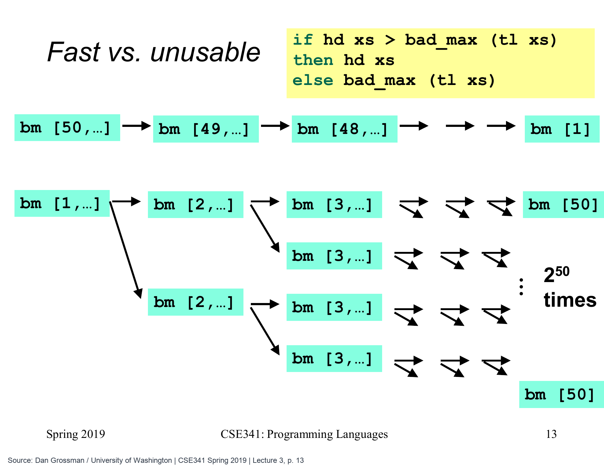

这一周，哪一天读的页数最多
我们已经能递归遍历阅读列表，也能用 let 给中间结果起名字。现在换一个很具体的问题：这一周每天读了 [12,18,10,15,0,20,25] 页，单日最高读了多少页？答案应该是 25；这里先只求最高页数，不求它是星期几。
求和时，我们把“第一个数”与“剩下所有数的和”相加。求最大值也可以沿同一条思路：先找出剩下那些数的最大值，再拿它与第一个数比较。 例如第一个数是 12，剩下的最大值是 25，整份列表的最大值就是 25。
这篇要解决的不是“怎样得到正确数字”这一个问题。同样得到 25 的两段代码，可能一段很快结束，另一段在列表稍长时就反复计算、迟迟不返回。我们先看清具体重复了什么，再讨论怎样描述它的工作量。
一个能算对非空列表的写法
把刚才的办法写成函数，需要先安排停下来的情况。列表只有一个数时，这个数就是最大值；列表有两个或更多数时，再求尾部最大值。空列表没有最大值，原课为了先专注于重复计算，暂时让它返回 0；下一篇会认真处理这个问题。
下面的 bad_max 输入整数列表，非空时返回其中最大的整数。名字里的 bad 是在提醒我们：这段写法有待修正，先不要拿它处理很长的列表。
fun bad_max (xs : int list) =
if null xs
then 0
else if null (tl xs)
then hd xs
else if hd xs > bad_max (tl xs)
then hd xs
else bad_max (tl xs);
val highest_pages = bad_max [12,18,10,15,0,20,25];
(* highest_pages = 25 *)第一层先用 null xs 排除空列表，之后才可以安全地读 tl xs。如果尾部为空，说明原列表恰好只有一个元素，直接取 hd xs。否则，条件部分先算出 bad_max (tl xs)，拿它与头部比较：头部大就返回头部，头部不大就返回尾部的最大值。
最后这句话从数学上没有问题，代码却把 bad_max (tl xs) 写了两次。写在条件里的那一次已经执行过；如果选择了最后的 else，那里又是一次新的调用。解释器不会因为两段文字相同，就自动替我们记住前一次的答案。
只用三天记录，把重复工作看清楚
为了不被七个数干扰，我们暂时看三天记录 [1,2,3]。答案显然是 3，但要数清调用次数，就要把条件里的计算和 else 里的计算分开看。下面每一行 bad_max ... 都表示实际发生的一次调用。
bad_max [1,2,3] 第 1 次
条件需要 bad_max [2,3] 第 2 次
条件需要 bad_max [3] → 3 第 3 次
2 > 3 为假，else 再求 [3] → 3 第 4 次
1 > 3 为假，else 再求 [2,3] 第 5 次
条件需要 bad_max [3] → 3 第 6 次
2 > 3 为假，else 再求 [3] → 3 第 7 次总共七次，而不是三次。更要紧的是，第二次求 [2,3] 时，不只是把一个已经得到的数字 3 再读一遍，而是把里面的过程也重新执行。重复的计算内部，又包含重复的计算。
换成 [3,2,1]，情况就不同了：先递归求 [2,1]，再求 [1]；返回时，2 大于 1、3 大于 2，都走 then，不再进入第二个递归调用。这样只有三次调用。答案都正确，输入顺序却把工作量拉开了。
用上一篇的 let，留住已经算出的数字
需要修正的地方现在很明确：尾部最大值求出一次后，把这个整数留下来，之后直接使用它。下面 good_max 的输入、非空结果和 bad_max 一样，只在至少有两个元素时，用局部名字 tailMax 记住尾部答案。
fun good_max (xs : int list) =
if null xs
then 0
else if null (tl xs)
then hd xs
else
let
val tailMax = good_max (tl xs)
in
if hd xs > tailMax
then hd xs
else tailMax
end;
val same_highest_pages = good_max [12,18,10,15,0,20,25];
(* same_highest_pages = 25 *)对于 [1,2,3]，最里面的 [3] 返回 3；处理 [2,3] 的那一层把 3 记为自己的 tailMax，比较 2>3 为假，就直接返回这个 3。最外层也得到自己的 tailMax=3，比较 1>3 为假，再返回 3。整个过程只调用了三次 good_max。
good_max [1,2,3]
good_max [2,3]
good_max [3] → 3
tailMax = 3，比较 2 与 3 → 3
tailMax = 3，比较 1 与 3 → 3val tailMax = ... 的右边要先完整计算一次，左边名字随后关联的是已经算好的整数。后来出现 tailMax 时，读取这个整数就可以了，不会重新执行那段递归。每一层有自己的局部名字，但每一层都只向更短的列表递归一次。

原图把 bad_max 简写为 bm。上方从 50 递减，每层比较后就返回当前头部；下方从 1 递增，比较时算过的尾部还要在 else 再算一次，所以箭头不断分叉。图中的 2⁵⁰ 是强调增长速度的数量级估算；下面缩小到 [1,2,3]，逐次看清确切的 7 次调用。
Dan Grossman / University of Washington, CSE341 Spring 2019 · Lecture 3 第 13 页 · 点击图片看大图
同一段尾部，究竟重新算了几遍
先按编号沿 bad_max [1,2,3] 的实际执行顺序看 7 次调用，最后换成 good_max，看 let 怎样把它缩成 3 次。
第 1 / 8 步第 1 次：原调用
fun bad_max (xs : int list) =if null xs then 0else if null (tl xs) then hd xselse if hd xs > bad_max (tl xs)then hd xselse bad_max (tl xs)
从根节点开始。比较头部 1 之前，需要先算 [2,3] 的最大值。
此刻的结果已调用 1 次
一次看完整过程（也可用于打印）
第 1 / 8 步第 1 次：原调用
fun bad_max (xs : int list) =if null xs then 0else if null (tl xs) then hd xselse if hd xs > bad_max (tl xs)then hd xselse bad_max (tl xs)
从根节点开始。比较头部 1 之前，需要先算 [2,3] 的最大值。
此刻的结果已调用 1 次
第 2 / 8 步沿左支到第 3 次
fun bad_max (xs : int list) =if null xs then 0else if null (tl xs) then hd xselse if hd xs > bad_max (tl xs)then hd xselse bad_max (tl xs)
第 2 次处理 [2,3]，又发起第 3 次 [3]。单元素直接得到 3。
此刻的结果已调用 3 次
第 3 / 8 步第 4 次：else 重新调用
fun bad_max (xs : int list) =if null xs then 0else if null (tl xs) then hd xselse if hd xs > bad_max (tl xs)then hd xselse bad_max (tl xs)
回到 [2,3]，2 > 3 为假，else 中的调用不会自动复用刚才答案，因此又调用一次 [3]。
此刻的结果已调用 4 次
第 4 / 8 步第 5 次：重算整个尾部
fun bad_max (xs : int list) =if null xs then 0else if null (tl xs) then hd xselse if hd xs > bad_max (tl xs)then hd xselse bad_max (tl xs)
第 2 次调用返回 3 后，根节点发现 1 > 3 为假，又在 else 发起新的 [2,3]。
此刻的结果已调用 5 次
第 5 / 8 步第 6 次：新调用也要求尾部
fun bad_max (xs : int list) =if null xs then 0else if null (tl xs) then hd xselse if hd xs > bad_max (tl xs)then hd xselse bad_max (tl xs)
这份新的 [2,3] 并没有保存旧调用的结果，它同样先调用 [3] 来比较。
此刻的结果已调用 6 次
第 6 / 8 步第 7 次：再次进入 else
fun bad_max (xs : int list) =if null xs then 0else if null (tl xs) then hd xselse if hd xs > bad_max (tl xs)then hd xselse bad_max (tl xs)
这一次也得到 2 > 3 为假，于是再发起第 7 次 [3]。每个树节点都代表一次真实调用。
此刻的结果已调用 7 次
第 7 / 8 步答案一样，工作重复
fun bad_max (xs : int list) =if null xs then 0else if null (tl xs) then hd xselse if hd xs > bad_max (tl xs)then hd xselse bad_max (tl xs)
所有调用交回 3。输入恰为递增的 [1,2,3]，所以每层都进入第二次递归，总计 7 次；这不是所有输入都固定发生的次数。
此刻的结果bad_max：7 次调用，结果 3
第 8 / 8 步只算一次并保存
fun good_max (xs : int list) =if null xs then 0else if null (tl xs) then hd xselse let val tailMax = good_max (tl xs)in if hd xs > tailMaxthen hd xs else tailMaxend
包含原调用的总数
| 版本 | 此输入的调用数 | 结果 |
|---|---|---|
| bad_max [1,2,3] | 7 | 3 |
| good_max [1,2,3] | 3 | 3 |
good_max 只走 [1,2,3]→[2,3]→[3] 三次调用。[3] 返回3后，每层把它保存为自己的 tailMax，比较和返回都直接读这个值。
此刻的结果good_max：3 次调用，结果仍是 3
依据课程重绘 · V12 原课程视频 / Lecture 3 幻灯片
多几个元素，差别会扩大到什么程度
先把刚才的计数继续往下推。递增输入只有一个元素时，bad_max 调用一次；两个元素时，自己一次，再求两次单元素列表，共三次；三个元素是七次；四个元素就变成 1+2×7=15 次。每增加一个元素，原来整套工作大致要做两遍。
这里把原调用也算在调用总数中。长度为 n 的严格递增非空列表，调用总数是 2^n-1；若写作 C(n)，相邻长度的关系就是 C(1)=1、C(n)=1+2×C(n-1)。这个公式只是把刚才“一次自己、两次尾部”的过程记下来。
| 列表长度 | bad_max：严格递减输入 |
bad_max：严格递增输入 |
good_max：任意顺序 |
|---|---|---|---|
| 3 | 3 | 7 | 3 |
| 10 | 10 | 1,023 | 10 |
| 30 | 30 | 1,073,741,823 | 30 |
| 50 | 50 | 1,125,899,906,842,623 | 50 |
这种随长度一层层翻倍的增长，叫作指数增长。改好后，每个非空的尾部只处理一次，长度增加多少，调用数就相应增加多少，叫作线性增长。将来读到“时间复杂度”时，可以把它理解为：输入变大后，工作量按什么规律增长；这里 good_max 的时间记作 O(n)。
原课还用一个假设建立量感：假定每次调用中除递归以外的工作只花一千万分之一秒，即 10^-7 秒，长度 50 的递增输入仍需约 3.57 年，长度 55 则超过一世纪。这是按次数推算的示意，不是机器实测。算法每多一层就重复整套工作，单靠机器快一些，很难弥补这种差别。
并非只有严格递增的列表会慢
如果所有元素相等，hd xs > ... 也总为假，因此仍会触发 else 里的第二次递归。若唯一的最大值排在列表很后面，前面的许多层也都会重复求尾部。把列表随便打乱，不能消除代码里的重复调用。
原课特别指出，null、hd、tl 本身都只做很少、不会随列表长度增加的工作，通常叫“常数时间”。tl 取得现有列表的尾部，不是把后面的所有元素重新复制一份。这段程序的主要代价，来自不断重做的 bad_max，而不是这些基本操作。
同一个答案，要看清是怎样算出来的
下面用三个小输入检查我们讨论的结果。前两个是相同列表的两种求法，最后一个说明：非空列表即使全是负整数，也应返回真正最大的那个负数。
val a = bad_max [3,1,4,2]; (* 4 *)
val b = good_max [3,1,4,2]; (* 4 *)
val c = good_max [~8,~3,~5]; (* ~3 *)这里的 let 只记住当前这次调用里算出的尾部结果。下一次独立调用 good_max，仍然会从它收到的列表重新计算，没有建立跨调用的历史答案库。也可以给 hd xs 另起一个名字以便阅读，但省下一次取头部，与省掉整棵重复递归的计算，收益很不一样。
补充：时间改好了，仍有等待返回的过程
good_max 向尾部递归时，外面各层还在等着比较结果，因此仍然需要保存这些等待中的计算。长度为 n 的列表，这部分额外空间也随 n 增长，通常记作 O(n)。后续讲尾递归时会继续处理它；现在先确认本篇已经消除了重复求尾部的问题。
视频里一次“卡住”，发生在准备输入时
原视频用 countup 和 countdown 自动生成较长列表，再交给最大值函数。这里是另外写的测试辅助版本，接收起点与终点，与第七篇只接收一个整数的 countdown 不同。它们分别从小到大、从大到小列出包括两端的整数；例如 countdown (3,1) 应产生 [3,2,1]。视频中有一次把 countdown 的上下界传反了，辅助函数继续向下数，走不到终点。
因此，当时 good_max 其实还没有开始运行：函数实参先求值，列表必须先生成，才能交给最大值函数。 这说明看到程序迟迟不返回时，要先判断它卡在准备输入，还是卡在目标函数内部。在原课的 Emacs 交互环境中，C-c C-c 可以中断这次运行。
现在，非空列表求最大值的计算已经整理好了。还有一个未解决的具体问题：good_max [] 和 good_max [0] 都给出 0，读到结果的人仍然无法判断到底有没有记录。下一篇就来区分这两种情况。
对应原课与回看线索
本篇对应 V12：Let and Efficiency。回看时先跟着三元素列表数调用，再看 let 保存尾部答案以后，为什么每层只剩一次递归。阅读记录、精确调用次数表与负数输入，是本系列增加的情境和推导。